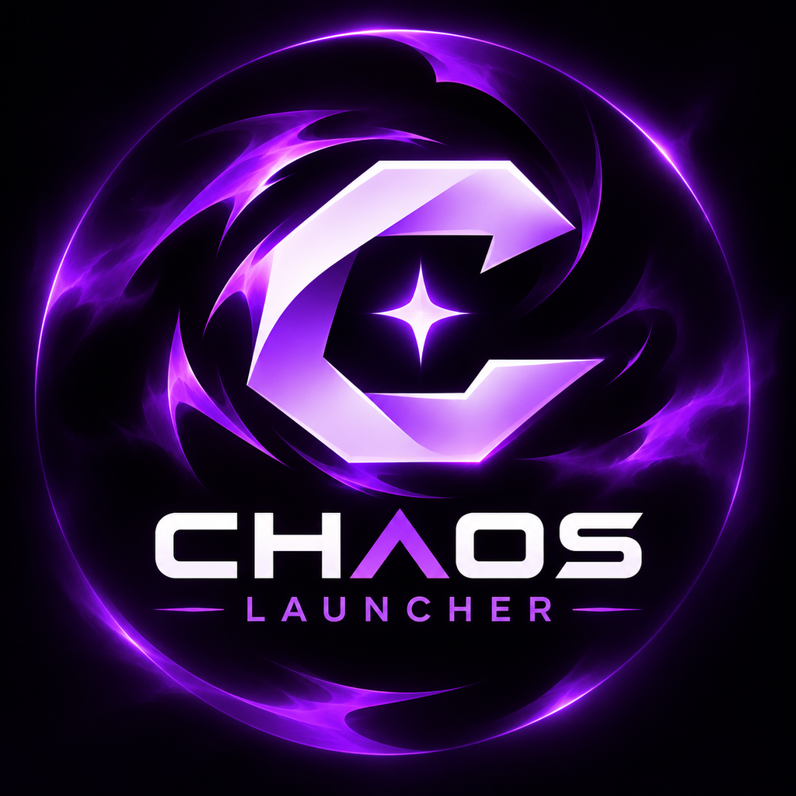

Chaos Library
Discover compatible mods through Modrinth and organize separate game profiles.

Chaos Launcher is a free Minecraft Java Edition launcher project for streamers, with mod discovery, game profiles and planned TikTok account linking.
View available releasesView source codeDiscover compatible mods through Modrinth and organize separate game profiles.
A dedicated place for our own TikTok Chaos mod and its dependencies.
Current Microsoft account connection uses Prism Launcher. Our own TikTok Login Kit integration is still being developed and is not available for public use.
Windows test releases may contain bugs. An official Minecraft Java Edition entitlement is required. Minecraft is not included with the launcher. TikTok account linking and independent Microsoft authentication are pending setup and approval. Login Kit does not provide access to LIVE gifts.
YσZSHI帝 · @y0zshhiii on TikTok
Read our draft Privacy Policy · Read our draft Terms of Service